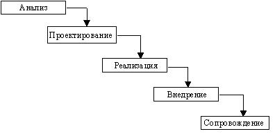
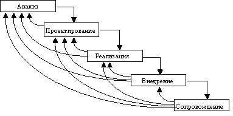

5. Каскадная модель жизненного цикла разработки ПО
В изначально существовавших однородных ИС каждое приложение представляло собой единое целое. Для разработки такого типа приложений применялся каскадный способ. Его основной характеристикой является разбиение всей разработки на этапы, причем пере-ход с одного этапа на следующий происходит только после того, как будет полностью завершена работа на текущем (рис. 2). Каждый этап завершается выпуском полного комплекта документации, достаточной для того, чтобы разработка могла быть продолжена командой специалистов на следующем этапе.

Рис. 2. Каскадная схема разработки ПО
Положительные стороны применения каскадного подхода заключаются в следующем:
Каскадный подход хорошо зарекомендовал себя при построении ИС, для которых в самом начале разработки можно достаточно точно и полно сформулировать все требова-ния, с тем чтобы предоставить разработчикам свободу реализовать их как можно лучше с технической точки зрения. В эту категорию попадают сложные расчетные системы, системы реального времени и другие подобные задачи. Однако, в процессе использования этого подхода обнаружился ряд его недостатков, вызванных прежде всего тем, что реальный процесс создания ПО никогда полностью не укладывался в такую жесткую схему. В процессе создания ПО постоянно возникала потребность в возврате к предыдущим этапам и уточнении или пересмотре ранее принятых решений. В результате реальный процесс создания ПО принимал вид, представленный на рис. 3.

Рис. 3. Реальный процесс разработки ПО по каскадной схеме
Основным недостатком каскадного подхода является существенное запаздывание с получением результатов. Согласование результатов с пользователями производится только в точках, планируемых после завершения каждого этапа работ, требования к ИС “заморожены” в виде технического задания на все время ее создания. Таким образом, пользователи могут внести свои замечания только после того, как работа над системой будет полностью завершена. В случае неточного изложения требований или их изменения в течение дли-тельного периода создания ПО, пользователи получают систему, не удовлетворяющую их потребностям. Модели (как функциональные, так и информационные) автоматизируемого объекта могут устареть одновременно с их утверждением.